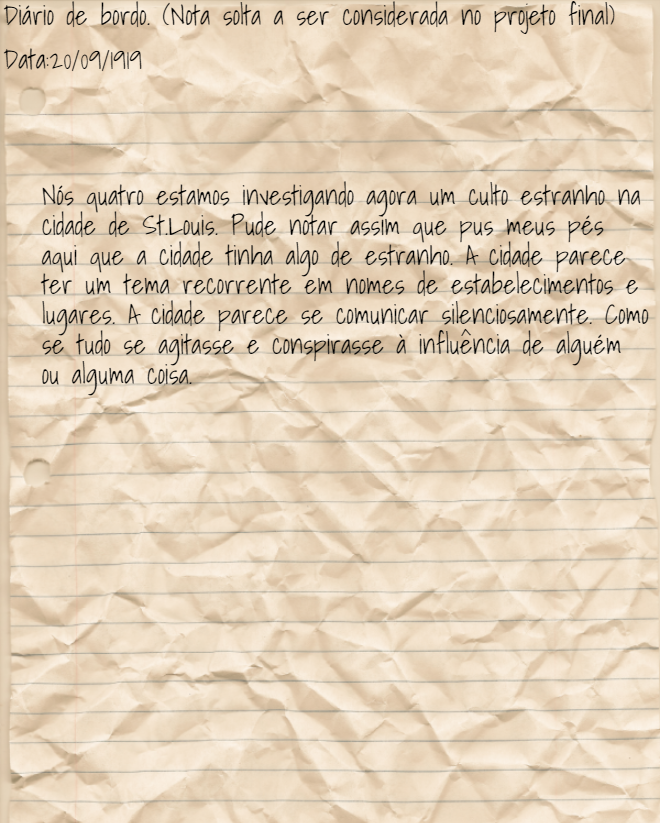

Cartas
Carta de Beijamin
Carta mandada por beijamin para Ethan antes de seu sumiço.
Notas de Beijamin
Notas encontradas na casa de Beijamin.
Carta de Matteo
Carta mandada por Matteo expressando sua felicidade com o dinheiro.
Carta da Camila

Carta da Sofia
Carta de sofia falando do monstro timido.
Carta do Gerhard
Carta do Gerhard falando sobre suspeitas do paradeiro de Michael.
Carta do prefeito
Anotações do Billy
Anotações do Billy (F no chat).
Desconhecidos
Homem de areia
Papel encontrado em um trem cheio de objetos amaldiçoados.